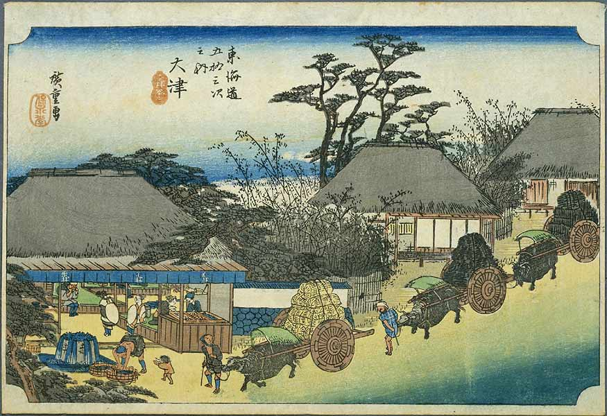

|
The Vietnamese German University IZUMI SHIKIBU(?976-?)
KIN'YŌSHŪ IX: 556Once when Izumi Shikbu was on her way to Ishiyama, she stopped in Ōtsu; late at night she sensed a crowd of people nearby making an enormous amount of noise. On enquiring what was going on, she was told, ‘Some people from the lower orders are polishing rice,’ and composed this poem. [1]
|